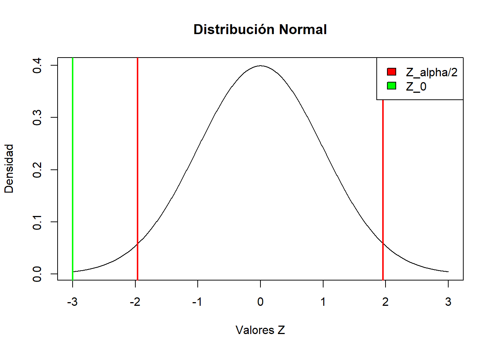
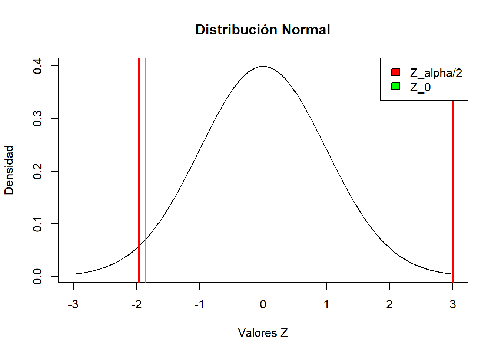
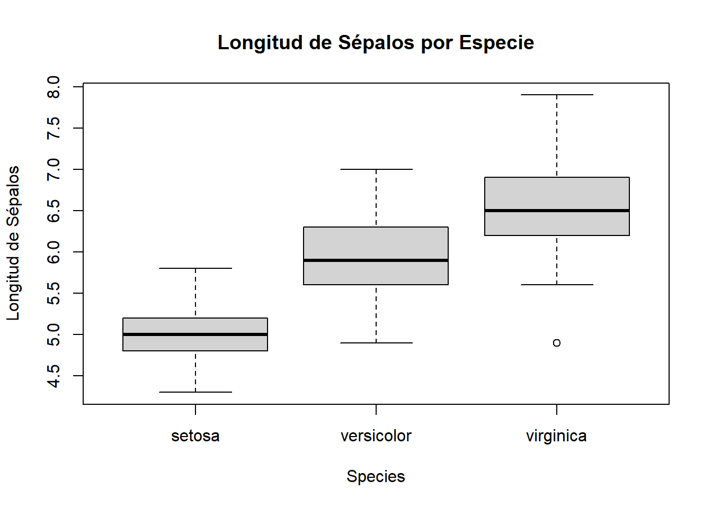
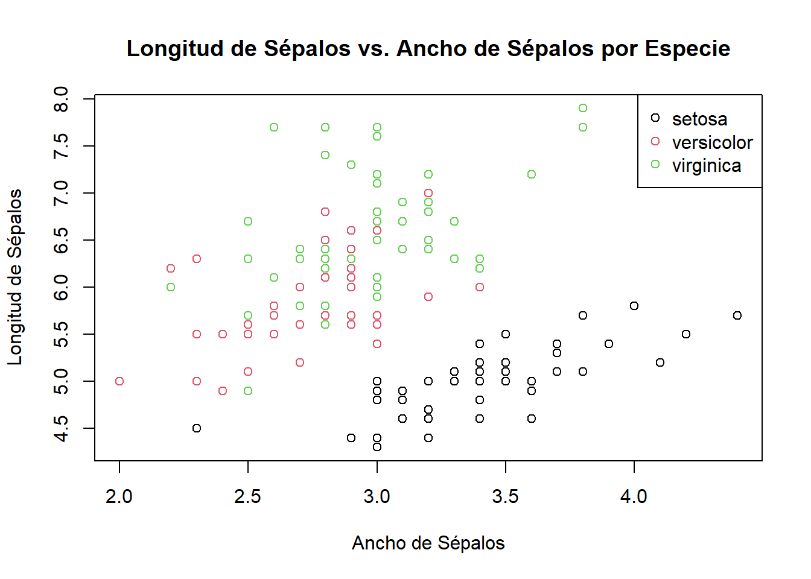

#muestra algoritmo A
n1<-100
#media de algoritmo A
x1<-0.78
#desviacion estandar de Algoritmo A
s1<-0.06
########################################
#muestra algoritmo B
n2<-100
#media de algoritmo B
x2<-0.82
#desviacion estandar de Algoritmo B
s2<-0.05Ejercicios del Parcial Final (Analisis Bivariado en: Diferencia de Medias, Diferencia de Proporciones y Razon de Varianza, Prueba ANOVA)
------------------------------------------------------------------------------------------------------------------
DIFERENCIA DE MEDIAS: Comparacion de rendimiento de dos algoritmos de aprendizaje automatizado
Un cientifico de datos esta trabajando en la mejora del rendimiento de un modelo de aprendizaje automatico para clasificacion. Quiere determinar si hay una diferencia significativa en la precision entre dos algoritmos diferentes. Para ello, recopila los resultados de ambas implementaciones en 100 conjuntos de datos diferentes y calcula la precision para cada uno.
Datos:
Algoritmo A: Precision media = 0.78, Desviacion estandar = 0.06
Algoritmo B: Precision media = 0.82, Desviacion estandar = 0.05
Tamaño de la muestra para ambos algoritmos = 100
Realiza un intervalo de confianza del 95% para la diferencia de medias y una prueba de hipotesis para determinar si hay evidencia suficiente para afirmar que hay una diferencia significativa en la precision a un nivel de significacia del 5%
Comprobar por las tres alternativas:
- Regla de Decisiones
- Metodo Grafico
- P-Valor.
-------------------------------------------------------------------------------------------------------------------
Regla de decisiones
Primero que todo, estableceremos las hipotesis:
\(H_0\) (Hipotesis Nula) = \(\mu_1 - \mu_2 = 0\) (No existe una diferencia significativa en las medias)
\(H_1\) (Hipotesis Alternativa) = \(\mu_1 - \mu_2 \neq 0\) (Existe una diferencia significativa en las medias)
Con esto en mente, podemos realizar nuestro intervalo de confianza y encontrar segun la regla de decisiones el resultado de nuestra hipotesis. En este caso, primero haremos la tabla de decisiones.
Como sabemos las medias, las desviaciones y la muestra es grande, optaremos por el primer caso:
Es una prueba de dos colas (bilateral), y se tiene la siguiente toma de decisiones:
Si \(Z \geq Z_\frac{\alpha}{2}\) o si \(Z \leq -Z_\frac{\alpha}{2}\), se rechaza H_0, de lo contrario se aceptara H_0.
Con los datos anteriores, podemos hallar a Z:
\[Z=\frac{(\hat{x_1}-\hat{x_2})-d_0}{\sqrt{\frac{\sigma^2_1}{n_1}+\frac{\sigma^2_2}{n_2}}}\] Donde, reemplazando con los datos anteriormente anotados:
\[Z=\frac{(0.78 - 0.82)-0}{\sqrt{\frac{0.06^2}{100}+\frac{0.05^2}{100}}}\]
\[Z=\frac{-0.04}{\sqrt{0.000036+0.000025}}\] \[Z=\frac{-0.04}{\sqrt{0.000061}} = \frac{-0.04}{0.00781} = -5.121\]
Como usaremos un nivel del 5%, sabemos que:
\[Z_\frac{\alpha}{2} = Z_{0.025} = 1.96\]
Con esta informacion, podemos decir que:
\[Z = -5.121, Z_\frac{\alpha}{2} = 1.96\]
\[ Z < - Z_\frac{\alpha}{2}\]
Con esto en mente, de vista inicial se puede decir que no se acepta la H_0.
A continuacion, se hara un intervalo de confianza para observar la diferencia de media entre los dos algoritmos. Este tiene la siguiente formula:
\[[(x_1-x_2)-Z_{\frac{\alpha}{2}}\sqrt{\frac{s^2_1}{n_1}+\frac{s^2_2}{n_2}} < \mu_1 - \mu_2 < (x_1-x_2)+Z_{\frac{\alpha}{2}}\sqrt{\frac{s^2_1}{n_1}+\frac{s^2_2}{n_2}}]\]
Ahora, reemplazando con los valores existentes:
\[[(0.78-0.82)-1.96\cdot\sqrt{\frac{0.06^2}{100}+\frac{0.05^2}{100}} < \mu_1 - \mu_2 < (0.78-0.82)+1.96\cdot\sqrt{\frac{0.06^2}{100}+\frac{0.05^2}{100}}]\] \[[(-0.04)-1.96\cdot\sqrt{0.000061} < \mu_1 - \mu_2 < (-0.04)+1.96\cdot\sqrt{0.000061}]\] \[[(-0.04)-1.96\cdot\ 0.00781 < \mu_1 - \mu_2 < (-0.04)+1.96\cdot 0.00781]\] \[[-0.0553 < \mu_1 - \mu_2 <-0.0246]\]
Debido a que el cero no esta en el intervalo de confianza, se puede decir que no se acepta la H_0
-------------------------------------------------------------------------------------------------------------------
Metodo Grafico
x_valores = seq(-3, 3, length=1000)
plot(x_valores, dnorm(x_valores), type="l", ylab="Densidad", xlab="Valores Z", main="Distribución Normal")
valor_Z_0 = -3
abline(v = valor_Z_0, col = "green", lwd = 2)
valor_critico_inf = -1.96
abline(v = valor_critico_inf, col = "red", lwd = 2)
valor_critico_sup = 1.96
abline(v = valor_critico_sup, col = "red", lwd = 2)
legend("topright", legend=c("Z_alpha/2", "Z_0"),
fill=c("red","green"))
(En este ejemplo, como una grafica de distribucion normal va en el intervalo -3 a 3, se coloco a \(Z = -5.21\) en el valor menor posible, en este caso, -3.)
Como se observa en la grafica, \(Z_0 = -5.21\) no cae en la region acotada por \(Z_{\frac{\alpha}{2}} = 1.96\). En este caso, se rechaza la \(H_0\)
-------------------------------------------------------------------------------------------------------------------
P-Valor
Para el p-valor, tenemos que:
si \(P-valor\le\alpha\), se rechaza \(H_0\)
Con esto en mente, se tiene lo siguiente:
\[P = 2[|1-\phi(Z_0)|]\] \[P = 2[|1-\phi(-5.21)|]\] NOTA: Debido a que en las tablas de distribucion normal esta habilitada para valores entre -3 y 3, y tambien por el valor absoluto, se le asignara el valor de 1 a \(\phi(Z_0)\).
\[P = 2[1-1]\] \[P = [2-2]\] \[P = 0\]
Entonces, como \(0 < 0.05\), es decir, \(P-Valor < \alpha\), se puede rechazar \(H_0\).
-------------------------------------------------------------------------------------------------------------------
Conclusion
Como conclusion, hay evidencias y hay suficientes pruebas estadisticas para argumentar que se rechaza la hipotesis que no hay diferencias significativas en las medias de los algoritmos probados.
----------------------------------------------------------------------------------------------------------------------------------------------------------------------------------------------------------------------------------------
DIFERENCIA DE PROPORCIONES: Evaluacion de la efectividad de dos tratamientos medicos
Un cientifico de datos participa en un estudio clinico que compara la efectividad de dos tratamientos medicos para una enfermedad especifica. Quiere determinar si hay una diferencia significativa en las tasas de exito entre los dos tratamientos. Los datos provienen de dos grupos independientes de pacientes.
Datos:
Tratamiento A: Exito en el 75% de los casos, tamaño de muestra = 100.
Tratamiento B: Exito en el 85% de los casos, tamaño de muestra = 120.
Realiza un intervalo de confianza para la diferencia de proporciones a un 95% y una prueba de hipotesis para evaluar si hay evidencia suficiente para afirmar que el Tratamiento A es mas efectivo que el Tratamiento B. A un nivel de significancia del 5%.
Comprobar por las tres alternativas:
- Regla de Decisiones
- Metodo Grafico
- P-Valor.
-------------------------------------------------------------------------------------------------------------------
Regla de decisiones
Primero que todo, estableceremos las hipotesis:
\(H_0\) (Hipotesis Nula) = \(P_1 - P_2 \leq 0\) (No existe una diferencia significativa o el tratamiento A es mas efectivo que el tratamiento B.)
\(H_1\) (Hipotesis Alternativa) = \(P_1 - P_2 > 0\) (El tratamiento A es mejor que el tratamiento B.)
#proporcion del tratamiento A
p1<-0.75
#tamaño de muestra de tratamiento A
n1 <-100
########################################
#proporcion del tratamiento B
p1<-0.85
#tamaño de muestra de tratamiento B
n1 <-120
#nivel de significancia
alpha <- 0.05Con esto en mente, podemos realizar nuestro intervalo de confianza y encontrar segun la regla de decisiones el resultado de nuestra hipotesis. En este caso, primero haremos la tabla de decisiones.
Como sabemos las medias, las desviaciones y la muestra es grande, optaremos por el primer caso:
Es una prueba de dos colas (bilateral), y se tiene la siguiente toma de decisiones:
Si \(Z \geq Z_{\alpha}\) , se rechaza H_0 de lo contrario se aceptara H_0.
Con esto en mente, podemos hallar la probabilidad del p combinado
\[\hat{p}_{\text{combinado}} = \frac{(n_1)(p_1)+(n_2)(p_2)}{(n_1)+(n_2)}\] En este caso, seria de la siguiente manera:
\[\hat{p}_{\text{combinado}} = \frac{(100)(0.75)+(120)(0.85)}{100+120} = \frac{177}{220} = 0.8045\]
Con el p combinado encontrado, pasaremos a hallar el estadistico de prueba.
-------------------------------------------------------------------------------------------------------------------
La formula para hallar el estadistico de prueba en una prueba de diferencia de proporciones con dos muestras es la siguiente:
\[Z = \frac{\hat{p}_1 - \hat{p}_2}{\sqrt{\frac{\hat{p}_0\cdot(1-{\hat{p}_0})}{n_1}+\frac{\hat{p}_0\cdot(1-{\hat{p}_0})}{n_2}}}\]
Reemplazando los valores, tendriamos de la siguiente manera:
\[Z = \frac{0.75 - 0.85}{\sqrt{\frac{0.804\cdot(1-0.804)}{100}+\frac{0.804\cdot(1-0.804)}{120}}} = \frac{-0.10}{0.0537} = -1.862\]
Para una prueba al nivel de 5%, se tiene que \(\alpha=0.05\)
Entonces, para una prueba bilateral, se tiene la siguiente toma de decisiones:
Si \(Z \geq Z_{\alpha}\) , entonces se rechazara \(H_0\), de lo contrario, se acepta \(H_0\)
En este caso:
\[Z_{\alpha} = 1.64\]
Como en este caso, \(-1.862 < 1.64\), no se puede rechazar la \(H_0\), entonces la aceptamos.
-------------------------------------------------------------------------------------------------------------------
Metodo Grafico
x_valores = seq(-3, 3, length=1000)
plot(x_valores, dnorm(x_valores), type="l", ylab="Densidad", xlab="Valores Z", main="Distribución Normal")
valor_Z_0 = -1.862
abline(v = valor_Z_0, col = "green", lwd = 2)
valor_critico_inf = -1.96
abline(v = valor_critico_inf, col = "red", lwd = 2)
valor_critico_sup = 3
abline(v = valor_critico_sup, col = "red", lwd = 2)
legend("topright", legend=c("Z_alpha/2", "Z_0"),
fill=c("red","green"))
Como se observa en la grafica, \(Z_0 = -1.862\) cae en la region acotada por \(Z_{\alpha} = 1.64\). En este caso, no se rechaza la \(H_0\)
-------------------------------------------------------------------------------------------------------------------
P-Valor
Para el p-valor, tenemos que:
si \(P-valor\le\alpha\), se rechaza \(H_0\)
Con esto en mente, se tiene lo siguiente:
\[P = [|1-\phi(Z_0)|]\] \[P = [|1-\phi(-1.86)|]\]
\[P = [1-0.0314]\] \[P = 0.9686\]
Entonces, como \(0.9686 > 0.05\), es decir, \(P-Valor > \alpha\), no se puede rechazar \(H_0\).
-------------------------------------------------------------------------------------------------------------------
Conclusion
Como conclusion, hay evidencias y hay suficientes pruebas estadisticas para argumentar que no existe una diferencia significativa en la proporcion de los tratamientos A y tratamientos B.
----------------------------------------------------------------------------------------------------------------------------------------------------------------------------------------------------------------------------------------
RAZON DE VARIANZAS: Evaluacion de la consistencia de dos instrumentos de medicion
Un cientifico de datos participa en un estudio de evaluacion de instrumentos de medicion. Quiere determinar si hay una diferencia significativa en la consistencia de dos instrumentos que miden la misma variable. Recopila datos de mediciones repetidas en una muestra de 30 observaciones con cada instrumento.
Datos:
Instrumento A: Varianza muestral = 36
Instrumento B: Varianza muestral = 25
Realiza un intervalo de confianza para la razon de varianzas y una prueba de hipotesis para evaluar si hay evidencia suficiente para afirmar que la consistencia de las mediciones difiere entre los dos instrumentos.
-------------------------------------------------------------------------------------------------------------------
Regla de decisiones
Primero que todo, estableceremos las hipotesis
\(H_0\) (Hipotesis Nula) = \(\sigma^2 = \sigma_0^2\) (Las varianzas de los instrumentos son iguales)
\(H_1\) (Hipotesis Alternativa) = \(\sigma^2 \neq \sigma_0^2\) (Las varianzas de los instrumentos no son iguales)
Con esto en mente, hallamos la proporcion para las dos muestras:
#muestra instrumento A
n1<-30
#varianza muestral del instrumento A
s1<-36
########################################
#muestra instrumento A
n2<-30
#varianza muestral del instrumento A
s2<-25Con esto, podemos calcular el estadistico de prueba usando la siguiente formula:
\[ F=\frac{s^2_1}{s^2_2} \]
Donde reemplazando es:
\[ F=\frac{36^2}{25^2} = 2.0736 \]
Para una prueba donde \(\alpha\) = 0.05, entonces: \(v_1 = n_1-1\) y \(v_2 = n_2 -1\)
$$ F_ = F_ = F_{0.025}(v1,v2) = F_{0.025}(29,29) = 1.86081143
$$ \(F = 2.0736, F_\frac{\alpha}{2}=1.86081143\) Como \(F > F_\frac{\alpha}{2}\), entonces no se aceptara la \(H_0\).
-------------------------------------------------------------------------------------------------------------------
Intervalo de confianza
Para un intervalo de confianza, se tiene la formula de la siguiente manera;
\[[\frac{s^2_1}{s^2_2}\frac{1}{F_\frac{\alpha}{2}} < \frac{\sigma^2_1}{\sigma^2_2} < \frac{s^2_1}{s^2_2}\cdot{F_\frac{\alpha}{2}}]\]
Al reemplazar los valores, tenemos lo siguiente:
\[[\frac{36^2}{25^2}\cdot\frac{1}{1.860} < \frac{\sigma^2_1}{\sigma^2_2} < \frac{36^2}{25^2}\cdot{1.860}]\]
\[[2.073\cdot\frac{1}{1.860} < \frac{\sigma^2_1}{\sigma^2_2} < 2.073\cdot{1.860}]\]
\[[2.073\cdot\frac{1}{1.860} < \frac{\sigma^2_1}{\sigma^2_2} < 2.073\cdot{1.860}]\]
\[[1.1145 < \frac{\sigma^2_1}{\sigma^2_2} < 3.855]\]
------------------------------------------------------------------------------------------------------------------
Conclusion
Como conclusion,hay evidencias y hay suficientes pruebas estadisticas para argumentar que las la varianza de los instrumentos son diferentes.
----------------------------------------------------------------------------------------------------------------------------------------------------------------------------------------------------------------------------------------
PRUEBA ANOVA
Para este ejemplo, se utilizara la prueba de normalidad Kolmogorov-Smirnov, y junto a este datos generados por el mismo programa:
Se usara los datos del conjunto de datos “iris”, integrado en R.
Con esto en mente, se plantean dos hipotesis con estos datos:
H_0: No existe una diferencia entre las distribuciones de la media en el tamaño de las hojas de las plantas “Versicolor” y “Setosa”
H_1: existe una diferencia entre las distribuciones de la media en el tamaño de las hojas de las plantas “Versicolor” y “Setosa”
Antes de empezar con la prueba, se mostraran los datos y graficos relevantes con relacion a la longitud de los petalos por especie.
data(iris)
head(iris) Sepal.Length Sepal.Width Petal.Length Petal.Width Species
1 5.1 3.5 1.4 0.2 setosa
2 4.9 3.0 1.4 0.2 setosa
3 4.7 3.2 1.3 0.2 setosa
4 4.6 3.1 1.5 0.2 setosa
5 5.0 3.6 1.4 0.2 setosa
6 5.4 3.9 1.7 0.4 setosamodelo_anova <- aov(Sepal.Length ~ Species, data = iris)
summary(modelo_anova) Df Sum Sq Mean Sq F value Pr(>F)
Species 2 63.21 31.606 119.3 <2e-16 ***
Residuals 147 38.96 0.265
---
Signif. codes: 0 '***' 0.001 '**' 0.01 '*' 0.05 '.' 0.1 ' ' 1boxplot(Sepal.Length ~ Species, data = iris, main = "Longitud de Sépalos por Especie", ylab = "Longitud de Sépalos")
plot(Sepal.Length ~ Sepal.Width, data = iris, col = as.numeric(iris$Species),
main = "Longitud de Sépalos vs. Ancho de Sépalos por Especie",
xlab = "Ancho de Sépalos", ylab = "Longitud de Sépalos")
legend("topright", legend = levels(iris$Species), col = 1:3, pch = 1)
# Se escogen el tamaño de los petalos de las dos especies (setosa y versicolor)
setosa_petal_length <- iris$Petal.Length[iris$Species == "setosa"]
versicolor_petal_length <- iris$Petal.Length[iris$Species == "versicolor"]
#Prueba de Kolmogorov-Smirnov
ks_test_result <- ks.test(setosa_petal_length, versicolor_petal_length)
print(ks_test_result)
Exact two-sample Kolmogorov-Smirnov test
data: setosa_petal_length and versicolor_petal_length
D = 1, p-value < 2.2e-16
alternative hypothesis: two-sidedif (ks_test_result$p.value < 0.05) {
cat("Se rechaza la hipótesis nula. Hay evidencia de que las distribuciones son diferentes.\n")
} else {
cat("No se puede rechazar la hipótesis nula. No hay suficiente evidencia para afirmar que las distribuciones son diferentes\n")
}Se rechaza la hipótesis nula. Hay evidencia de que las distribuciones son diferentes.Con esto, tenemos suficiente evidencia estadistica para rechazar la hipotesis nula y aceptamos la alternativa que nos indica que hay una diferencia en la distribucion de la longitud de los petalos de las dos especies “Versicolor” y “Setosa”.